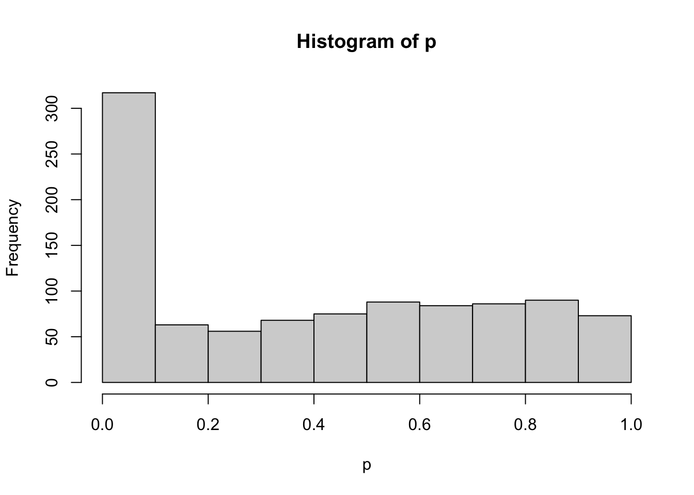
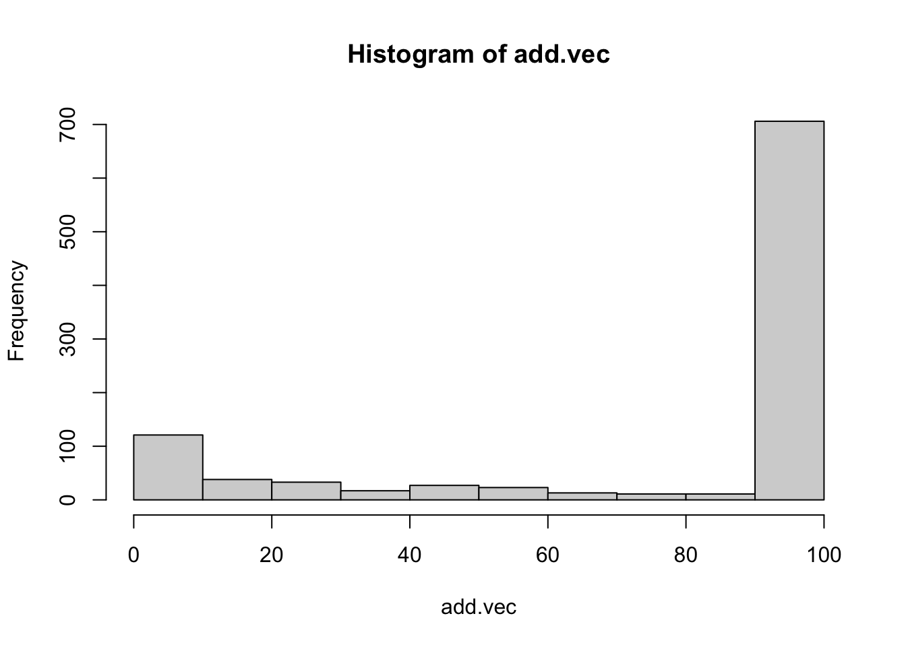
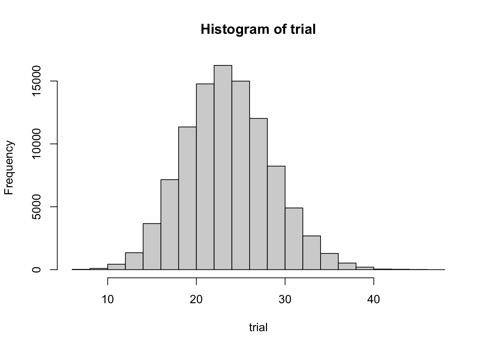
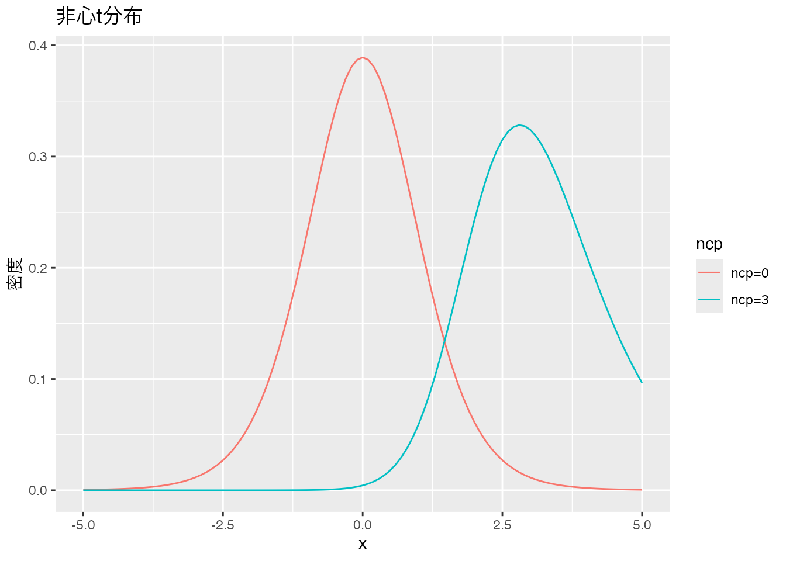

Code
pacman::p_load(tidyverse)
pacman::p_load(broom) # 分析結果をtidyに整形するパッケージ。ない場合はinstallしておこうここまでシミュレーションを通じて仮想データを生成し，帰無仮説検定のステップをリバースエンジニアリングしながら検定を「モデル」の観点から確認してきた。
シミュレーションは仮想世界を作ることであり，いかようにもデータを作ることができるのだから，たとえば実践的にタブーとされていることを仮想的に検証してみることができる。このアプローチで，QRPsが具体的にどのように問題になるのかを体験してみよう。
帰無仮説検定は確率を伴った判断なので，「差がないのにあると判断してしまった(タイプ1エラー)」とか，「差があるのに検出できなかった(タイプ2エラー)」といった問題が生じうる。すでに述べたように，タイプ2エラーの方は本質的に知り得ないので(差がどの程度あるか，事前にわかっていることがない)，せめてタイプ1エラーは制御することを目指すことになる。
こうした検定は合理的に行われるべきもので，なんとか有意に「したい」といった研究者のお気持ちとは独立しているはずである。しかし(もしかすると)意図せぬところで，この制御に失敗してしまっている可能性がある。
ひとつは検定の繰り返しに関する問題である。たとえば分散分析において，「主効果が出てから下位検定で各ペアの検証をするんだから，最初から各ペアのt検定を繰り返せばいいじゃないか」と考える人がいるかもしれない。これで本当に問題ないのか，シミュレーションで確認してみよう。
以下のコードは，有意差のないデータセットを作り，1.分散分析を行なって有意になるかどうか，2.各ペアについて繰り返しt検定を行い，どこかに有意差が検出されるかどうか，を比較している。分散分析はANOVA君ではなく，R固有のaov関数を用いた1。また，「どこかに有意差が検出される」をif文を使って書いているところを，注意深く確認しておいてほしい。
pacman::p_load(tidyverse)
pacman::p_load(broom) # 分析結果をtidyに整形するパッケージ。ない場合はinstallしておこうalpha <- 0.05 # 有意水準を0.05に設定
n1 <- n2 <- n3 <- 10 # 各グループのサンプルサイズを10に設定
mu <- 10 # 平均値を10に設定
sigma <- 2 # 標準偏差を2に設定
mu1 <- mu2 <- mu3 <- mu # 各グループの平均値を同じに設定
set.seed(12345) # 乱数のシードを設定して再現性を確保
iter <- 1000 # シミュレーションの繰り返し回数を1000に設定
anova.detect <- rep(NA, iter) # ANOVA検出結果の保存用ベクトルを初期化
ttest.detect <- rep(NA, iter) # t検定検出結果の保存用ベクトルを初期化
for (i in 1:iter) { # 1000回のシミュレーションを繰り返すループ
X1 <- rnorm(n1, mu1, sigma) # グループ1のデータを生成
X2 <- rnorm(n2, mu2, sigma) # グループ2のデータを生成
X3 <- rnorm(n3, mu3, sigma) # グループ3のデータを生成
dat <- data.frame( # データフレームを作成
group = c(rep(1, n1), rep(2, n2), rep(3, n3)), # グループ番号を追加
value = c(X1, X2, X3) # データを追加
)
result.anova <- aov(value ~ group, data = dat) %>% tidy() # ANOVAを実行し結果を整形
anova.detect[i] <- ifelse(result.anova$p.value[1] < alpha, 1, 0) # 有意差があるかを判定して保存
# t検定を繰り返す
ttest12 <- t.test(X1, X2)$p.value # グループ1と2のt検定
ttest13 <- t.test(X1, X3)$p.value # グループ1と3のt検定
ttest23 <- t.test(X2, X3)$p.value # グループ2と3のt検定
ttest.detect[i] <- ifelse(ttest12 < alpha | ttest13 < alpha | ttest23 < alpha, 1, 0) # いずれかのt検定で有意差があれば保存
}
ttest.detect %>% mean() # t検定で有意差が検出された割合を計算[1] 0.109anova.detect %>% mean() # ANOVAで有意差が検出された割合を計算[1] 0.04結果を見ると，t検定で有意差が検出された確率が0.109であり，設定した\(\alpha\)水準を大きく上回っていることがわかる。有意でないところに有意差を見出しているのだから，これはタイプ1エラーのインフレである。分散分析で検出された結果は0.04であり，正しく\(\alpha\)水準がコントロールできている。
検定を繰り返すことの問題は，確率的判断にある。5%の水準でタイプ1エラーが起こるということは，95%の確率で正しく判断できるということだが，2回検定を繰り返すとその精度は\((1-0,05)^2=0.9025\)であり，3回検定を繰り返すと\((1-0.05)^3=0.857375\)と，どんどん小さくなっていってしまう。検定はタイプ1エラーのハンドリングが目的であったことを忘れてはならない。
一つの論文のなかに複数の研究(Study1, Study2,…)があり，それぞれで検定による確率的判断を行っているとしよう。それぞれ別のデータセットに対する検定であっても，一つの露文の中で確率的判断が繰り返されていることに違いはない。このような場合は，どのようにして有意水準をコントロールすれば良いのだろうか。
最も単純明快な方法のひとつは，分散分析の下位検定でもみられたBonferroniの補正である。すなわち，検定の回数で有意水準を割ることで，検定を厳しくするのである。5%水準の検定を5回繰り返すのなら，\(0.05/5=0.01\)とすることで全体的なタイプ1エラー率を抑制するのである。これが正しく機能するかどうか，シミュレーションで確認してみよう。
反復してデータを生成することになるので，仮想データ生成関数を別途事前に準備しておこう。
# シミュレーション用の関数を定義
studyMake <- function(n, mu, sigma, delta) {
X1 <- rnorm(n, mu, sigma) # グループ1のデータを生成
X2 <- rnorm(n, mu + sigma * delta, sigma) # グループ2のデータを生成（平均値が異なる）
dat <- data.frame( # データフレームを作成
group = rep(1:2, each = n), # グループ番号を追加
value = c(X1, X2) # データを追加
)
result <- t.test(X1, X2)$p.value # グループ間のt検定を実行
return(result) # p値を返す
}この関数は，引数としてサンプルサイズn，平均値mu，標準偏差sigma，効果量deltaをとり，2群のt検定の結果である\(p\)値を返す関数である。
# 使用例；t検定の結果のp値が戻ってくる
studyMake(n = 10, mu = 10, sigma = 1, delta = 0)[1] 0.9444895これ一回で1分析するので，これを複数回行って一つの研究とし，一つの論文のなかでnum_studies回の研究を行ったとしよう。今回はnum_studies = 3としている。Rのreplicate関数で研究回数繰り返した\(p\)値ベクトルを得て，どこかに差が検出されるかどうかをチェックする。「どこかに」を表現するためにany関数を使って判定する。判定する有意水準として，\(\alpha\)と補正をかけた\(\alpha_{adj}\)の2つを用意した。
set.seed(12345) # 乱数のシードを設定して再現性を確保
iter <- 1000 # シミュレーションの繰り返し回数を1000に設定
alpha <- 0.05 # 有意水準を0.05に設定
num_studies <- 3 # 研究の数を3に設定
alpha_adjust <- alpha / num_studies # 多重検定補正後の有意水準を計算
FLG.detect <- rep(NA, iter) # 検出結果を保存するベクトルを初期化
FLG.detect.adj <- rep(NA, iter) # 補正後の検出結果を保存するベクトルを初期化
for (i in 1:iter) { # 1000回のシミュレーションを繰り返すループ
p_values <- replicate(num_studies, studyMake(n = 10, mu = 10, sigma = 1, delta = 0)) # 各研究のp値を生成
FLG.detect[i] <- ifelse(any(p_values < alpha), 1, 0) # 補正前の有意差検出を判定して保存
FLG.detect.adj[i] <- ifelse(any(p_values < alpha_adjust), 1, 0) # 補正後の有意差検出を判定して保存
}
FLG.detect %>% mean() # 補正前の有意差検出率を計算[1] 0.145FLG.detect.adj %>% mean() # 補正後の有意差検出率を計算[1] 0.049結果を見ると，\(\alpha\)水準のまま検定を行うと，論文全体でのタイプ1エラー率が0.145と5%を上回っており，3つの研究のどこかで間違った判断をしていることがわかる。補正すると0.049と正しく制御されている。
一連の研究をまとめた一つの論文に，複数の研究が含まれていることは少なくない。各検定結果をまとめて総合考察とすることも一般的である。総合考察は各分析結果から全体的な結論を導くのだが，その要素のどこかに間違いがあると，全体の論立てが崩れてしまうことにもなりかねない。いわば腐った支柱が紛れ込んでいる土台の上に家屋を建てるようなもので，研究の積み重ねを目的とする科学活動の一環である以上，正しく制御されていることは重要である。
人間を対象にした研究を行って，データを一生懸命取る。その結果，効果があると見られた操作/介入から統計的な有意差が検出されなければ，「悔しい」という心情になることは理解できる。もう少し実験を工夫すれば，もう少しデータが違えばよかったのでは，と思うかもしれない。ではもう少し頑張ってデータを増やしてみればどうだろうか。
実はこの考え方はQRPsのひとつである。検定は真偽判定をする競技のようなものなので，ゲームの途中でプレイヤーの人数が変わるのはよろしくない。このことをシミュレーションで確認してみよう。
以下のコードは，t検定のデータを最初n1=n2=10で作成して行っている。タイプ1エラーの検証をするので，効果量は\(0\)である。ここでt検定を行い，もしその\(p\)値が\(\alpha\)よりも大きかったら，つまり有意であると判断されなかったら，同じ方法でデータを1件追加する。そしてまたt検定を行う。このサンプルの追加は，効果量\(0\)なので，偶然のお許しが出るまでいつまで経っても終わることがないため，上限を100にしてある。上限に達したら流石に諦めてもらうとして，さてそうしたQRPsな努力の結果，\(\alpha\)水準はどれぐらいに保たれているだろうか。
iter <- 1000 # シミュレーションの繰り返し回数を1000に設定
alpha <- 0.05 # 有意水準を0.05に設定
p <- rep(0, iter) # p値を保存するベクトルを初期化
add.vec <- rep(0, iter) # 増やした人数を保存するベクトルを初期化
set.seed(123) # 乱数のシードを設定して再現性を確保
n1 <- n2 <- 10 # 各グループのサンプルサイズを10に設定
mu <- 10 # 平均値を10に設定
sigma <- 2 # 標準偏差を2に設定
delta <- 0 # 平均の差を0に設定
## シミュレーション本体
for (i in 1:iter) { # 1000回のシミュレーションを繰り返すループ
# 最初のデータを生成
Y1 <- rnorm(n1, mu, sigma) # グループ1のデータを生成
Y2 <- rnorm(n2, mu + sigma * delta, sigma) # グループ2のデータを生成
p[i] <- t.test(Y1, Y2)$p.value # t検定を実行しp値を保存
# データを追加する
count <- 0 # 追加したデータの数をカウント
## p値が5%を下回るか、データが100になるまでデータを増やし続ける
while (p[i] >= alpha && count < 100) { # 条件を満たすまでループを繰り返す
# 有意でなかった場合、変数ごとに1つずつデータを追加
Y1_add <- rnorm(1, mu, sigma) # グループ1に新しいデータを1つ追加
Y2_add <- rnorm(1, mu + sigma * delta, sigma) # グループ2に新しいデータを1つ追加
Y1 <- c(Y1, Y1_add) # グループ1のデータを更新
Y2 <- c(Y2, Y2_add) # グループ2のデータを更新
p[i] <- t.test(Y1, Y2)$p.value # 新しいデータでt検定を再度実行しp値を更新
count <- count + 1 # データを追加した回数をカウント
}
add.vec[i] <- count
}
## 結果
ifelse(p < 0.05, 1, 0) |> mean() # p値が5%未満の割合を計算[1] 0.306hist(p)
hist(add.vec)
結果をみると，0.306とかなり逸脱して，誤った結論に辿り着いていることがわかる。努力の結果得られた有意差は，偶然の賜物でもあり，誤った研究実践による幻想にすぎない。加えたデータのヒストグラムからわかるように，悲しいかな，75%もの割合で上限100まで達してしまう。百害あって一利なしとはこのことである。
サンプルサイズを事前に決めずに検定する，という状況を別の角度から見てみよう。クルシュケ ([2014] 2017) は「コインフリップを24回して，うち7回表が出た」というシーンを例に挙げて説明している。7/24は半分を下回っているから，やや裏が出やすいコインであるように思える。帰無仮説として，このコインは公平である(表と裏が出る確率が半々である)，というのを検証したいとする。
この24回中7回成功，という話の背後に「24施行する」ということを決めていたかどうか(サンプルサイズを事前に決めていたか)ということを考えてみよう。
まずは正直に，最初から24回コインフリップすることを決めていたとする。コインフリップはベルヌーイ試行2 であり，それを繰り返すので二項分布に従うと考えられる。そこで，二項検定として次のように計算できるだろう。
N <- 24
# 7回表が出る確率
pbinom(7, N, 0.5) * 2[1] 0.06391466二項分布のp値を出すにはpbinomを使いった。また帰無仮説として，このコインフリップは公平であると考えているのだから，\(\theta=0.5\)が帰無仮説の状態である。この\(\theta=0.5\)とした時に，\(N=24,k=7\)という結果になる確率を計算し，かつ両側検定(公平でない，が対立仮説なので裏が7回でもよい)であることを考えて確率を2倍した。p値は0.0639147であるから，5%水準では有意であると判定できない。これぐらいの確率はあるということだ。
しかしここで第二の状況を考えてみよう。24回コインフリップすることを決めていたのではなくて，7回成功するまでコインフリップを続けたところ，結果的に24回で終わったということだった，とするのである。このようなシーンの確率分布は負の二項分布と呼ばれ，pnbinomで次のように計算できる。
k <- 7
# 24回以上必要な確率
pnbinom(k, 24, 0.5) * 2[1] 0.003326893この結果から，\(\theta=0.5\)の時に7回表がでるまでに24施行も必要とする確率は，0.0033269だから，5%水準で有意である。つまり，滅多にこんなことが起きないので，\(\theta=0.5\)という帰無仮説が疑わしいことになる。ここではシーンが異なるとp値が違っている，ということに注意してほしい。
さらに第3のシーンを考えよう。これは「何回やるかは決めてないけど，まあ5分ぐらいかな」と試行にかける時間だけ決めていたという状況である。結果的に24回になったけど，もしかすると23回だったかもしれないし，25回や20回，30回だったかもしれない。これをシミュレーションするために，「24がピークになるような頻度の分布」をポアソン分布を使って生成する3。
4 ポアソン分布は正の整数を実現値に取る分布で，カウント変数の確率分布として用いられる。パラメータは\(\lambda\)だけであり，期待値と分散が\(\lambda\)に一致する，非常にシンプルな分布である。
set.seed(12345)
iter <- 100000 # 発生させる乱数の数
## 24回がピークに来るトライアル回数
trial <- rpois(iter, 24)
hist(trial)
この各トライアルにおいて，二項分布で成功した回数を計算し，トライアル回数で割ることによって，表が出る確率のシミュレーションができる。その時の割合は，\(7/24\)よりもレアな現象だろうか?
result <- rep(NA, iter)
for (i in 1:iter) {
result[i] <- rbinom(1, trial[i], 0.5) / trial[i]
}
## 7/24よりも小さい確率で起こった?
length(result[result < (7 / 24)]) / iter[1] 0.02262これを見ると，両側検定にしても0.04524なので，ギリギリ有意になるかどうか，というところだろうか。
さて判断にこまった。「24回やる」と決めていたのであれば\(\theta=0.5\)は棄却されないし，「7回成功するまで」と決めていたのであれば\(\theta=0.5\)は棄却される。「5分間」と決めていても棄却されるが，そもそもこうした実験者の意図によって判断が揺らいで良いものだろうか?というのが クルシュケ ([2014] 2017) の指摘する疑問点である。
問題は，「24回中7回成功」という事実に，二項分布，負の二項分布，あるいは組み合わさった分布のような，確率分布の情報が含まれていないことにある。この確率分布はデータが既知で母数が未知だから尤度関数であり，データ生成メカニズムであるとも言えるだろう。想定するメカニズムが明示されない検定は，ともすれば事後的に「実は負の二項分布を想定していたんですよ，へへ」ということも可能になってしまう。こうした点からも，研究者の自由度をなるべく少なくする研究計画の事前登録制度が必要であることがわかる。
どのようにデータを取り，どのように分析・検定し，どのような基準で判断するかを事前に決めることに加え，事前にサンプルサイズを見積もっておく必要があるだろう。サンプルはとにかく多ければ多いほど良いか，というとそうではなく，過剰にサンプルを集めることは研究コストの増大であり，回答者の負担増でしかない。またサンプルサイズが大きくなると有意差を検出しやすくなるが，必要なのは有意差ではなく実質的に効果を見積もることであり，有意差が見つかれば良いというものではないことに注意が必要である。もちろん上で見てきたように，有意差が検出できるかどうかを指標にしてサンプルサイズを変動させてしまうのは，明らかに誤った研究実践である。
事前にサンプルサイズを決定するのに必要なのは，これまでのリバースエンジニアリングの演習例からもわかるように，効果量の見積もりである。5 これをどのように定めるかについては，先行研究を考えるとか，研究領域で「これぐらい差がないと意味がないよね」とコンセンサスが取れている程度で決めることになる。6
サンプルサイズの設計には，これまで使ってきた検定統計量に非心度non-centrality parameterというパラメータを加えて考える必要がある。
具体的に，対応のないt検定を例にサンプルサイズ設計の方法を見てみよう。t検定は言葉の通り，t分布を用いて帰無仮説の元での検定統計量の実現値が問題になるのであった。帰無仮説は\(\mu_0 = \mu_1-\mu_2 = 0\)であり，検定統計量は次式で表されるのであった。
\[ T = \frac{d - \mu_0}{\sqrt{U^2_p/\frac{n_1n_2}{n_1+n_2}}}\]
この分子において，\(d - \mu_0 = (\bar{X}_1 - \bar{X}_2) - (\mu_1 - \mu_2)\)の第二項を,\(\mu_1-\mu_2 = 0\)と仮定するから，\(0\)が中心の標準化されたt分布が用いられたのである。帰無仮説はこのように理論的に特定できる比較点をもとに置かれているのであって，帰無仮説下ではない現実の世界では，検定統計量は母平均の差\(\mu_1 - \mu_2\)に応じた分布から生じている。このように中心がずれているt分布のことを非心分布といい，ズレの程度が非心度パラメータである。t検定における非心度\(\lambda\)は，以下の式で表される。
\[ \lambda = \frac{(\mu_1-\mu2) - \mu_0}{\sigma\sqrt{n}} \]
この非心度の分だけ，非心t分布はt分布からズレていることになる。Rではdt関数にncpパラメータがあり，デフォルトではncp=0になっていた。これを変えて描画してみよう。
# データの準備
df <- 10 # 自由度を指定
# ggplotでプロット
ggplot(data.frame(x = c(-5, 5)), aes(x = x)) +
stat_function(fun = dt, args = list(df = df, ncp = 0), aes(color = "ncp=0")) +
stat_function(fun = dt, args = list(df = df, ncp = 3), aes(color = "ncp=3")) +
labs(
title = "非心t分布",
x = "x",
y = "密度",
color = "ncp"
)
ncp=0の時は，中心が0にある帰無仮説の世界であり，これを使ってタイプ1エラー，つまり\(\alpha\)が算出されたのであった。ncpを効果量で表現すれば，母平均の差がゼロでない時の分布が描けるのだから，タイプ2エラー，つまり\(\beta\)が計算できる。
自由度df = 10，非心度ncp = 3の例で考えてみよう。 タイプ1エラーになるのは，自由度10のt分布で上2.5%の臨界値以上の実現値が得られた時である。
qt(0.975, df = 10, ncp = 0)[1] 2.228139このとき，実際はncp = 3ほどずれていたのだから，タイプ2エラーが生じる確率は次のとおりである。
qt(0.975, df = 10, ncp = 0) %>% pt(df = 10, ncp = 3)[1] 0.2285998当然，ncp = 0から離れるほどタイプ2エラーは生じにくくなる。非心度は母効果量\(\delta = \frac{(\mu_1 - \mu_2)-\mu_0}{\delta}\)を使って，\(\lambda = \delta \sqrt{n}\)で表すことができる。
これを使って，t検定のサンプルサイズを設計してみよう。話を簡単にするために，サンプルサイズは2群で等しいものとする。
検定統計量の式を思い出して，\(\sqrt{n}\)にあたるところは2群のサンプルサイズから計算される，プールされた標本サイズから得られることに注意しよう7。
alpha <- 0.05
beta <- 0.2
delta <- 0.5
for (n in 10:1000) {
df <- n + n - 2
lambda <- delta * (sqrt((n * n) / (n + n)))
cv <- qt(p = 1 - alpha / 2, df = df) # Type1errorの臨界値
er <- pt(cv, df = df, ncp = lambda) # Type2errorの確率
if (er <= beta) {
break
}
}
print(n)[1] 64ここでは，サンプルサイズを10から徐々に増やしていき，1000までの間で目標とする\(\beta\)まで抑えられたところで，カウントしていくforループをbreakで脱出する，というかたちで組んでいる。結果的に，各群64名，合計128名のサンプルがあれば，目標が達成できることがわかる。サンプルサイズが2群で異なる場合など，詳細は@kosugi2023 に詳しい。
非心F分布を使えば分散分析でもサンプルサイズができるし，そのほかの検定についても同様に非心分布を活用すると良い。しかし，非心分布の理解や非心度の計算など，ケースバイケースで学ぶべきことは多い。
そこで，電子計算機の演算力をたのみに，データ生成のシミュレーションを通じて設計していくことを考えてみよう。サンプルサイズや効果量を定めれば，仮想データを作ることができるし，それ対して検定をかけることもできる。仮想データの生成と検定を反復し，タイプ2エラーがどの程度生じるかを相対度数で近似することもできるだろう。であれば，その近似をサンプルサイズを徐々に変えることで繰り返してサンプルサイズを定めることもできる。
以下は，母相関が\(\rho = 0.5\)とした時に，検出力が80%になるために必要なサンプルサイズを求めるシミュレーションコードである。
pacman::p_load(MASS)
set.seed(12345)
alpha <- 0.05
beta <- 0.2
rho <- 0.5
sd <- 1
Sigma <- matrix(NA, ncol = 2, nrow = 2)
Sigma[1, 1] <- Sigma[2, 2] <- sd^2
Sigma[1, 2] <- Sigma[2, 1] <- sd * sd * rho
iter <- 1000
for (n in seq(from = 10, to = 1000, by = 1)) {
FLG <- rep(0, iter)
for (i in 1:iter) {
X <- mvrnorm(n, c(0, 0), Sigma)
cor_test <- cor.test(X[, 1], X[, 2])
FLG[i] <- ifelse(cor_test$p.value > alpha, 1, 0)
}
t2error <- mean(FLG)
print(paste("n=", n, "のとき，betaは", t2error, "です。"))
if (t2error <= beta) {
break
}
}[1] "n= 10 のとき，betaは 0.681 です。"
[1] "n= 11 のとき，betaは 0.639 です。"
[1] "n= 12 のとき，betaは 0.612 です。"
[1] "n= 13 のとき，betaは 0.566 です。"
[1] "n= 14 のとき，betaは 0.563 です。"
[1] "n= 15 のとき，betaは 0.471 です。"
[1] "n= 16 のとき，betaは 0.462 です。"
[1] "n= 17 のとき，betaは 0.419 です。"
[1] "n= 18 のとき，betaは 0.402 です。"
[1] "n= 19 のとき，betaは 0.385 です。"
[1] "n= 20 のとき，betaは 0.353 です。"
[1] "n= 21 のとき，betaは 0.344 です。"
[1] "n= 22 のとき，betaは 0.312 です。"
[1] "n= 23 のとき，betaは 0.285 です。"
[1] "n= 24 のとき，betaは 0.256 です。"
[1] "n= 25 のとき，betaは 0.265 です。"
[1] "n= 26 のとき，betaは 0.21 です。"
[1] "n= 27 のとき，betaは 0.227 です。"
[1] "n= 28 のとき，betaは 0.176 です。"print(n)[1] 28ここではシミュレーション回数1000，上限1000，刻み幅を1にしているが，状況に応じて変更すると良い。
n1=n2=n3=10、標準偏差も各群等しくsigma = 1としてみましょう。ANOVA君は結果をコンソールに直接出力し，戻り値を持たない。ここでは結果の\(p\)値が必要だったので，このようにした。↩︎
表(1)が出るか，裏(0)が出るか，という2値の結果変数だけを持つ施行のことで，この確率変数がベルヌーイ分布にし違う。ベルヌーイ分布は，表が出る確率\(\theta\)をパラメータに持つ。\(P(X=k) = \theta^k(1-\theta)^{1-k},\text{ただし}k=\{0,1\}\)という確率変数である。1/0というのが生死，男女，成功失敗などさまざまなメタファに適用できるので応用範囲が広い。↩︎
もちろん基準となる有意水準\(\alpha\)，検出力\(1-\beta\)も定める必要があるが，慣例的に\(\alpha = 0.05\)であり，\(1-\beta =0.8\)ぐらいが必要とされている。↩︎
もちろん基準となる有意水準\(\alpha\)，検出力\(1-\beta\)も定める必要があるが，慣例的に\(\alpha = 0.05\)であり，\(1-\beta =0.8\)ぐらいが必要とされている。↩︎
もちろん基準となる有意水準\(\alpha\)，検出力\(1-\beta\)も定める必要があるが，慣例的に\(\alpha = 0.05\)であり，\(1-\beta =0.8\)ぐらいが必要とされている。↩︎
この「最低限検出したい効果」のことをSmallest Effect Size of Interest, SESOIと呼ぶ。小杉, 紀ノ定, and 清水 (2023) も参照。↩︎
t統計量の実現値の式にある分母，\(\sqrt{U_p^2/\frac{n_1n_2}{n_1+n_2}}\)に見られる，プールされた不偏分散を割るための標本サイズであり，2群の母分散が等しいと仮定して計算するなら，\(\sigma^2(\frac{1}{n_1} + \frac{1}{n_2}) = \sigma^2(\frac{n_1+n_2}{n_1n_2}) = \sigma^2 / \frac{n_1n_2}{n_1 + n_2}\)から得られる。↩︎